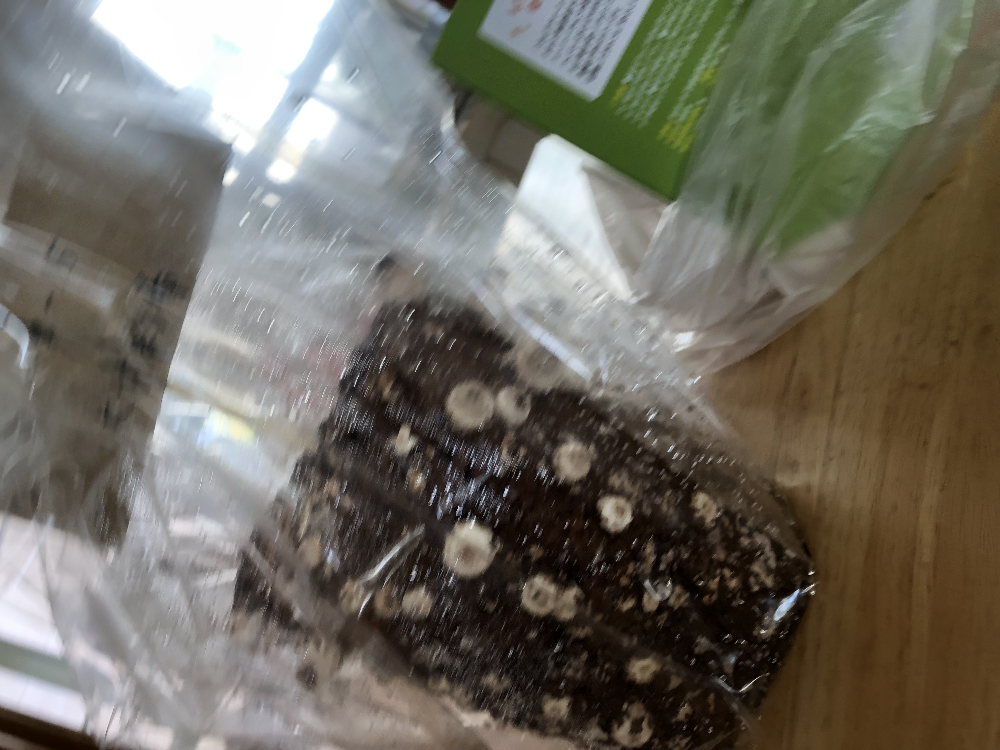

🍄きのこの成長記録🍄
11月6日水やり1回目
初めての水やりをしました。
これからどんな風に育つのか楽しみです！
11月8日水やり2回目

少しきのこっぽいものが生えてきたけど、まだまだ小さいです。
11月11日水やり3回目
完全なるきのこになってました！
少し小さいかもだけど、もう美味しそう🤤
11月13日
| 収穫前 | 収穫後 | 収穫したきのこ |
 |  | |
大きなきのこがたくさん出来ていました！きのこはハサミで根本を切って収穫しました。
一週間でここまで大きくなると思っていなくて、驚きました。
美味しそうなきのこに育ってくれて少し安心しました。
『しいたけと鶏むね肉のバター醤油炒め』を作る
材料
・しいたけ ・玉ねぎ ・鶏むね肉
・バター ・醤油
作り方
①しいたけと玉ねぎと鶏むね肉を食べやすい大きさに切る
②鶏むね肉を炒める
③表面が焼けてきたら、しいたけと玉ねぎをフライパンに入れる
④バターと醤油を入れて炒める
完成！
【食べた感想】
味は不味くはなかったけど、全体的に薄かったです。
バターの入れ過ぎで脂っこかったので量を減らしたほうがいいと思いました。しいたけは美味しかったです。